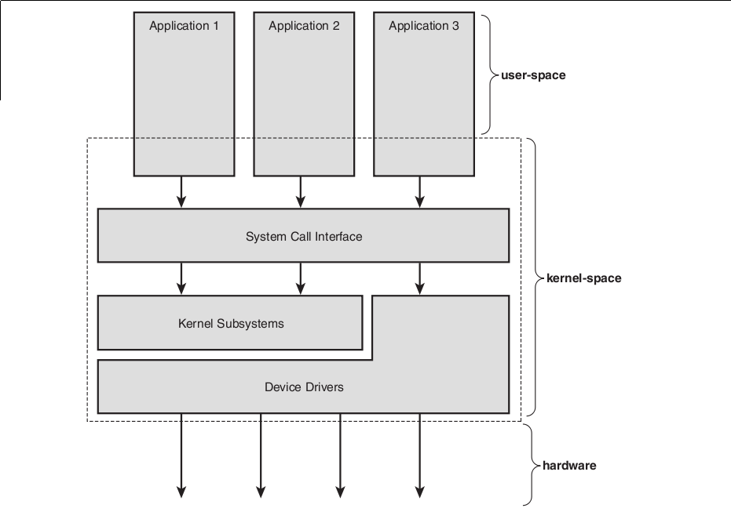
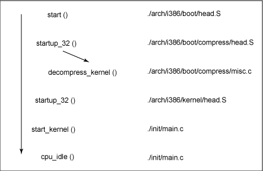
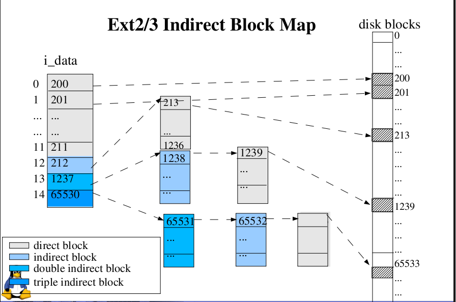
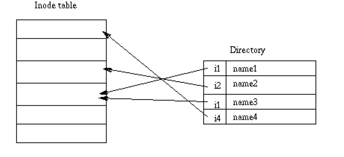
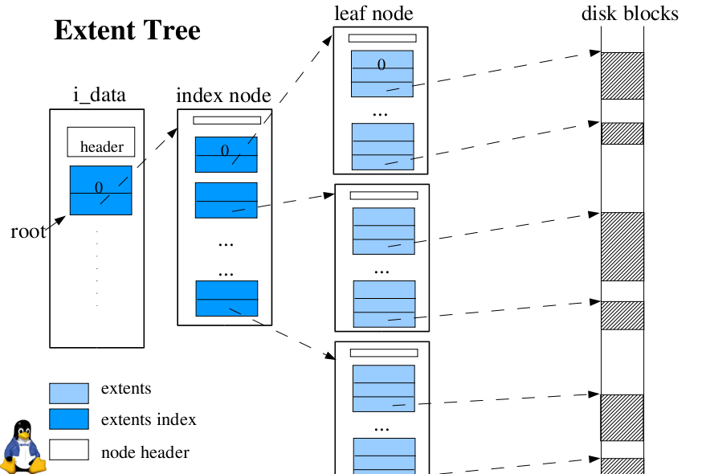
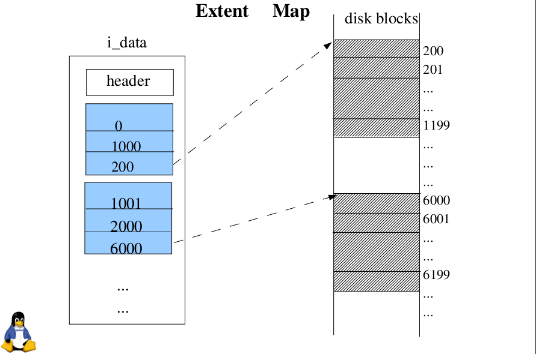

Linux File Systems
Mohan Chinnappan
Zoom in/out: Ctrl + +/-
File Systems
Every filesystem must keep track of two basic things:
where your data is, and where the free space is
- Linux Arch
- Minix FS
- Unix FS
- Ext FS
- Ext2 FS
- Ext3 FS
- Ext4 FS
- Btrfs
- ZFS
Linux Arch
Booting process
BIOS --> Bootloader --> Kernel -> start Scheduler, run init and go idle

Disk Geometry
Alewife Parking Lot
Booting process -- contd.
- Processor executes code at address 0xFFFF0 in BIOS (in the flash memory in mother board)
- Power-on self test (POST) and local device enumeration and initialization. After the POST is complete, it is flushed from memory, but the BIOS runtime services remain and are available to the target operating system.
- BIOS determines which devices are candidates for boot. BIOS runtime searches for devices that are both active and bootable in the order of preference defined by the complementary metal oxide semiconductor (CMOS) settings.
- Usually, Linux is booted from a hard disk, where the Master Boot Record (MBR) contains the primary boot loader. The MBR is a 512-byte sector, located in the first sector on the disk (sector 1 of cylinder 0, head 0). After the MBR is loaded into RAM, the BIOS yields control to it.
- When the second-stage boot loader is in RAM and executing, a splash screen is commonly displayed, and Linux and an optional initial RAM disk (tmp root file system) are loaded into memory. When the images are loaded, the second-stage boot loader passes control to the kernel image and the kernel is decompressed and initialized.
- The second-stage boot loader checks the system hardware, enumerates the attached hardware devices, mounts the root device, and then loads the necessary kernel modules.
- The first user-space program (init) starts, and high-level system initialization is performed.
Booting process -- contd.
Master Boot Record (MBR)

- The first 446 bytes are the primary boot loader, which contains both executable code and error message text. The next sixty-four bytes are the partition table, which contains a record for each of four partitions (sixteen bytes each). The MBR ends with two bytes that are defined as the magic number (0xAA55). The magic number serves as a validation check of the MBR.
Booting process -- contd.
- The job of the primary boot loader is to find and load the secondary boot loader (stage 2). It does this by looking through the partition table for an active partition. When it finds an active partition, it scans the remaining partitions in the table to ensure that they're all inactive. When this is verified, the active partition's boot record is read from the device into RAM and executed.
- Stage 2 boot loader (Kernel Loader): Loads the Linux kernel, initrd ( initial-RAM disk) image and optional initial RAM disk and invokes the kernel image. The first and second stage boot loaders combined are called Linux Loader (LILO) or GRand Unified Bootloader (GRUB)
- Kernel: Kernel images is ZImage( compressed and < 512K) or bzImage( compressed images > 512K). Kernel images is decompressed and placed in the high memory.

In the end, a call is made to kernel_thread (in arch/i386/kernel/process.c) to start the init function, which is the first user-space process.
Finally, the idle task is started and the scheduler can now take control (after the call to cpu_idle). With interrupts enabled, the pre-emptive scheduler periodically takes control to provide multitasking.
Booting process -- contd.
- This initrd serves as a temporary root file system in RAM and allows the kernel to fully boot without having to mount any physical disks. Since the necessary modules needed to interface with peripherals can be part of the initrd, the kernel can be very small, but still support a large number of possible hardware configurations. After the kernel is booted, the root file system is pivoted (via pivot_root) where the initrd root file system is unmounted and the real root file system is mounted.
File Systems
- Every filesystem must keep track of two basic things: where your data is, and where the free space is. -- Jeff Bonwick (ZFS)
-
Multiples of bytes
kilobyte (kB) 10^3 2^10
pow(2,10)megabyte (MB) 10^6 2^20 gigabyte (GB) 10^9 2^30 terabyte (TB) 10^12 2^40 petabyte (PB) 10^15 2^50 exabyte (EB) 10^18 2^60 zettabyte (ZB) 10^21 2^70 yottabyte (YB) 10^24 2^80 -
Linux is a Unix-like operating system
Every Linux filesystem implements a basic set of common concepts derivated from the Unix operating system
- files are represented by inodes
- directories are simply files containing a list of entries
- devices can be accessed by requesting I/O on special files
inodes (index nodes) or inumber
- Each file is represented by a structure, called an inode
inode ( is a structure with):
description of the file:
(file type, access rights, owners, timestamps, size, pointers to data blocks that are allocated to the file)
$ stat /etc/passwd
File: `/etc/passwd'
Size: 2348 Blocks: 8 IO Block: 4096 regular file
Device: 806h/2054d Inode: 533 Links: 1
Access: (0644/-rw-r--r--) Uid: ( 0/ root) Gid: ( 0/ root)
Access: 2010-11-16 18:13:24.850056151 -0500
Modify: 2010-09-24 18:14:29.584169850 -0400
Change: 2010-09-24 18:14:29.628742830 -0400
inode and blocks

Inode Structure
The Inode data structure is typically 128 bytes in size.
Non-Essential means the field might be unused.
Bytes 0-1: File mode (essential)
Bytes 2-3: Lower 16 bits of user ID (non-essential)
Bytes 4-7: Lower 32 bits of size in bytes (essential)
Bytes 8-11: Access time (non-essential)
Bytes 12-15: Change time (non-essential)
Bytes 16-19: Modification time (non-essential)
Bytes 20-23: Delete time (non-essential)
Bytes 24-25: Lower 16 bits of group ID (non-essential)
Bytes 26-27: Link count (non-essential)
Bytes 28-31: Sector count (non-essential)
Bytes 32-35: flags (non-essential)
Bytes 36-39: unused
Bytes 40-87: 12 direct block pointers (essential)
Bytes 88-91: 1 single indirect block pointer (essential)
Bytes 92-95: 1 double indirect block pointer (essential)
Bytes 96-99: 1 triple indirect block pointer (essential)
Inode Structure contd.
Bytes 100-103: Generation number (non-essential)
Bytes 104-107: Extended attribute block (file acl) (non-essential)
Bytes 108-111: Upper 32 bits of size / Directory ACL (essential/non-essential)
Bytes 112-115: Block address of fragment
Bytes 116-116: Fragment index in block (non-essential)
Bytes 117-117: Fragment size (non-essential)
Bytes 118-119: unused
Bytes 120-121: Upper 16 bits of user ID (non-essential)
Bytes 122-123: Upper 16 bits of group ID (non-essential)
Bytes 124-127: unused
inode - space calculation
Suppose that a file is 1MB and a block is 8KB. Then the file will need 128 blocks to store it contents.
The question is: how do we keep track of these 128 data blocks of the file. We can do this by using index blocks (also called indirect blocks) that contain pointers to other index and data blocks. In Linux, the inode contains 15 pointers. The first 12 pointers are to data blocks. The 13th pointer points to a single indirection index block, i.e. an index block with pointers to data blocks. The 14th pointer points to a double indirection index block, i.e. an index block that points to index blocks that point to data blocks. The 15th pointer points to a triple indirection index block. If we assume that a block is 8KB and a pointer is 8 bytes, then an index block can contain 1K ( = 2^^10) pointers. The maximum size of a file in the file system will be 8KB*(12 + 2**10 + 2**20 + 2**30), that is more than 8TB.
>>> 8*pow(2,10) * ( 12 + pow(2,10) + pow(2,20) + pow(2,30))
8804691443712L
With 8 KB data blocks, if the file is 96 KB or smaller, then it uses 12 blocks or less on disk, and all those block addresses are stored directly in the inode itself.
QUESTION:
With an 8 KB block size and 4-byte disk addresses, We can fit 2048 disk addresses in the single indirect block. So, for files from 96 KB + 1 byte to 16 MB - How many single indirect blocks are required?
inode - space calculation - ANSWER
>>> bsize = 8*pow(2,10)
>>> fsize = 16*pow(2,20)
>>> ptrsize = 4
>>> num_ptrs_per_block = bsize/ptrsize
>>> print num_ptrs_per_block
2048
>>> num_blocks_reqd_for_file = fsize/bsize
>>> print num_blocks_reqd_for_file
2048
ANSWER: Number of single indirection block required: ONE
The inode pointer structure not only allows for files to easily be allocated to non-contiguous blocks, it also allows the data at a particular location inside a file to be easily located. This is possible because the logical block size is fixed.
QUESTION:
If each block is 8 KB, file's data at 120 to 128 KB would be pointed to by the Nth pointer of the first indirect block (assuming twelve direct pointers in the inode pointer structure). What is value of N?
inode - space calculation - ANSWER
>>> ( 128*pow(2,10) - 12 * bsize ) / bsize
>>> 4
ANSWER: ................................... Value of N is : FOUR
Directory
Each directory can contain files and subdirectories -- is a file containing a list of entries.
When a file is asked: kernel searches in the dirs and find the inode for it.
FileName => inode number. inode is loaded into the memory.
$ ls -il
total 9088
1082925 -rwxr-xr-x 1 mohan mohan 527289 2010-11-17 08:58 080515-Week1-Intro-4up.pdf
1082926 -rwxr-xr-x 1 mohan mohan 292137 2010-11-17 08:53 hfs.pdf
Links ( 2 kinds )
Hard links
Several names can be associated with a single inode.
Adding a link : creating a directory entry and increment the links count in the inode (++count)
Removing a link: (rm fn) : link count is decremented (--count) and if count == 0 deallocate that inode
- can be used within a single FS (not possible to have a cross-FS hard link)
- can point to only files (not dirs, to avoid circular references)
Symbolic links
Simply files which contain target filename as its content. They do not point to an inode
eg. file1 will have the pathname name of the file2 (target file) as its content. So file1 becomes symbolic link for file2
Kernel: got(slink) ==> read(it_contents) ==> get(inode ) of the target file
- can be used for cross-FS links
- can point to any file, even to non-existent file
- uses disk space (for storing the pathname of target file)
- has overhead for kernel in pathname2inode conversion
Special files
Do not use any space on FS
It is only an access point to the device driver
Two types: character and block
Char: allows I/O operations in character mode
Block: requires data to be written in block mode via the buffer cache functions.
Kernel: When an I/O request is made on a special file, it is forwarded to a (pseudo) device driver.
VFS (Virtual File System)
VFS (Virtual File System)
Indirection layer which handles the file oriented system calls and calls the necessary functions in the physical filesystem code to do the I/O.
Helps in integration and the use of several filesystem types in OS
Has structure independent manipulations and redirects the call to a function contained in the physical filesystem code (responsible for
handling the structure dependent operations via buffer cache and finally to the hardware level)
Kernel: on file oriented system call, calls functions in VFS.
VFS (Virtual File System)
- defines a set of functions that every filesystem has to implement (operations associated: filesystems, inodes,
and open files)
- knows about filesystem types supported in the kernel (table: fs ==> mount() fn for that fs)
mount(): will be called when the FS is being mounted.
Responsible for: reading the superblock from the disk
intializing its internal vars
returns FS descriptor, which provides handle to access physical level FS functions
FS Descriptor:
Data common to all FS
Ptrs to functions provided by physical level FS kernel code to allow VFS to access the FS internel functions
private data maintained by the physical FS code
two types:
inode descriptor (has ptrs to functions that can be used to act any file -- create, unlink)
open file descriptor (has ptr to functions which can act on the open file -- read, write)
Minix FS
Very early version of Linux had Minix FS (Linux was inspired by MINIX)
+ Minix FS was efficient and relatively bug-free
Issues with Minix FS:
- block addresses are stored in 16 bit integers, can address only 64K blocks:
>>> pow(2,16) = 65,536 ( = 64K)
so max. size for the FS = 64K x 1K (one K bytes per block) = 64 MB
max. file size = 64MB
- the maximal file name is 14 characters
Solutions:
VFS (Virtual File System) Layer - Chris and Linus wrote it
Ext FS (Extended File System) - Apr 1992 - Linux ver 0.96c --Rémy Card
Ext2 FS (Second Extended File System) - Rémy Card, 1993
Ext3 FS (Third Extended File System) (Linux ver 2.4.15 onwards) -- Dr. Stephen C. Tweedie
Ext4 FS (Fourth Extended File System) (Linux ver 2.6.19) -- Theodore Tso (MIT)
Ext FS (Extended File System) - Apr 1992 - Linux ver 0.96c --Rémy Card
- Max. filesystem size: 2GB
- Max file size: 2GB
- Max file name: 255 chars
- Fixed block size
Big improvment over Minix FS
Issues:
- no support for:
data modification timestamps
- bad performance:
linked lists was used to keep track of free blocks and inodes
after usage: lists became unsorted and the filesystem became fragmented
Ext2 FS (Rémy Card, 1993)
Goal: Provide a powerful FS with Unix file semantics and offer advanced features and great performance
robust ( low risk of data loss) - fit for intensive use
extensions to allow using new features w/o reformating the fs
- Max. filesystem size: 2TB ( 4TB after VFS code upgrade) - Can use big disks w/o the need of creating many partitions
- Max file size: 2GB
- Max file name: 255 chars ( can be 1012 if required)
- Variable block size
- supports (regular files, dirs, device special files and symlinks)
- reserves 5% blocks for su (root) to allow root to recover easily from situations where user has filled up the fs
- based on the Ext fs code with many reorganizations and many improvements
- designed with evolution in mind and contained space for future improvements
Ext2 FS contd...
advanced:
User can set the attribs on a file or dir. New files in that dir can inherit those attribs.
mount options: allow the root to chose file creation semantics
BSD like sync update avaiable via mount option ( meta data objects: inodes, bitmap blocks, indirect blocks and dir blocks can be written to the disk synchronosuly)
-- expensive op
Variable block size: root can select logical block size (usually 1K, 2K and 4K)
bigger blocks: fewer IOs, speed up I/O but may waster disk space (bigger buckets!)
fast symlink: target name is stored in the inode itself - make it fast for the kernel
but inode space avl is limited, so there is a limit for th target name: 60 chars
fs state is tracked in a spl field in the superblock (Not Clean -- r/w, ro mode: Clean, onErrors: Erroneous)
fsck uses this info to decide on fs checking
mount count is maintained: when mount_count reaches a max value, fsck forces check even if the state=="Clean"
last_check_time and max_check_interval also store in the superblock of fs.
Ext2 FS contd...
attribute for secure deletion:
User can request secure deletion on her/his files
when that file is deleted, random data is written in the data blocks previously allocated to that file.
This prevents bad guys from gaining access to the prev content by tools like disk editor
Immutable files: r/o files, nobody can delete them -- to protect sensitive config files.
Append only a/o files: data can be added only at EOF, cannot be deleted or renamed -- useful for log files
Ext2 FS contd...
Physical structure:
Influenced by BSD fs:
fs made up of block groups
The physical structure of a filesystem is represented as:
Boot Sector -- Block Group-1 -- Block Group-2 ... -- Block Group-N
Block group:
- contains a redundant copy of crucial filesystem control info: (superblock and the fs descriptors)
- part of the filesystem (a block bitmap, an inode bitmap, a piece of the inode table, and data blocks)
Structure:
Superblock -- FS Descriptor -- Block Bitmap -- Inode Bitmap -- inode table -- data blocks
Reliablity: this provides replication of the control structures - makes easy to recover from a fs where superblock is corrupted
Perf: this reduces the distance between inode table and data blocks
Ext2 FS contd...
What is a Superblock:
Superblock is used to store the metadata of the FS:
File system type
Size
Status
Information about other metadata structures
Linux maintains multiple redundant copies of the superblock in every file system.
# on a Ext4 FS
$ sudo dumpe2fs /dev/sda6 | grep -i superbloc
dumpe2fs 1.41.11 (14-Mar-2010)
Primary superblock at 0, Group descriptors at 1-3
Backup superblock at 32768, Group descriptors at 32769-32771
Backup superblock at 98304, Group descriptors at 98305-98307
Backup superblock at 163840, Group descriptors at 163841-163843
Backup superblock at 229376, Group descriptors at 229377-229379
Backup superblock at 294912, Group descriptors at 294913-294915
Backup superblock at 819200, Group descriptors at 819201-819203
Backup superblock at 884736, Group descriptors at 884737-884739
Backup superblock at 1605632, Group descriptors at 1605633-1605635
Backup superblock at 2654208, Group descriptors at 2654209-2654211
Backup superblock at 4096000, Group descriptors at 4096001-4096003
Backup superblock at 7962624, Group descriptors at 7962625-7962627
Ext2 FS contd...
Dir:
Dirs are managed as linked list of variable length entries - to enable implement long file name without wasting disk space
Each entry: inode number -- entry length -- name length -- filename
eg:
123434 -- 16 -- 05 -- file1
342344 -- 40 -- 14 -- long_file_name
545344 -- 12 -- 02 -- f2
Perf optimizations:
- Buffer cache mgmt is used to perform readaheads: when a block to be read, the kernel requests the I/O on serveral contiguous blocks
So that next block to read will be already loaded into the buffer cache.
- Allocation optimizations: Block groups cluster together related inodes and data: kernel tries to allocate data blocks for a file in the same block group as its inode.
This reduces the disk head seeks made when the kernel reads an inode and its data blocks.
- Preallocates upto 8 adjacent blocks when allocating a new block to acheive good write performances under heavy load
Ext2 FS contd...
tools:
tune2fs part ofe2fsprogs package (adjust tunable filesystem parameters [max_mount_count,max_check_interval, num_blocks_reserved_for_su] on ext2/ext3/ext4 filesystems)
# on a ext4 fs:
sudo tune2fs -l /dev/sda6
tune2fs 1.41.11 (14-Mar-2010)
Filesystem volume name:
Last mounted on: /
Filesystem UUID: de896090-2a7b-4804-bd61-3988087dcbd3
Filesystem magic number: 0xEF53
Filesystem revision #: 1 (dynamic)
Filesystem features: has_journal ext_attr resize_inode dir_index filetype needs_recovery extent flex_bg sparse_super large_file huge_file uninit_bg dir_nlink extra_isize
Filesystem flags: signed_directory_hash
Default mount options: (none)
Filesystem state: clean
Errors behavior: Continue
Filesystem OS type: Linux
Inode count: 2523136
Block count: 10082779
Reserved block count: 504138
Ext2 FS contd...
Free blocks: 1384853
Free inodes: 1729932
First block: 0
Block size: 4096
Fragment size: 4096
Reserved GDT blocks: 1021
Blocks per group: 32768
Fragments per group: 32768
Inodes per group: 8192
Inode blocks per group: 512
Flex block group size: 16
Filesystem created: Fri Mar 12 21:53:27 2010
Last mount time: Mon Nov 8 11:33:00 2010
Last write time: Wed Nov 3 19:10:43 2010
Mount count: 2
Maximum mount count: 26
Last checked: Wed Nov 3 19:10:43 2010
Check interval: 15552000 (6 months)
Next check after: Mon May 2 19:10:43 2011
Lifetime writes: 494 GB
Reserved blocks uid: 0 (user root)
Reserved blocks gid: 0 (group root)
First inode: 11
Ext2 FS contd...
Inode size: 256
Required extra isize: 28
Desired extra isize: 28
Journal inode: 8
First orphan inode: 14619
Default directory hash: half_md4
Directory Hash Seed: f9efbc46-05db-49c3-964d-526a4f345f25
Journal backup: inode blocks
Ext2 FS contd...
Issues:
- no support for:
Journaling
too long fsck
500GB - mkfs takes 3-4 hrs
small file efficiency not good (vs reiserfs)
directory scalability is not as good as (XFS)
Solutions:
Ext3 FS (Third Extended File System) (Linux ver 2.4.15 onwards) -- Dr. Stephen C. Tweedie
Ext4 FS (Fourth Extended File System) (Linux ver 2.6.19) -- Theodore Tso (MIT)
Ext3 fs ( version 2.4.15 onwards) -- Dr. Stephen C. Tweedie
Limits:
Max file size 16 GB – 2 TB
Max number of files Variable, allocated at creation time
Max filename length 254 bytes
Max volume size 2 TB – 16 TB
ext2 filesystem with a journal file ((which is a dedicated circular log on a contiguous region of the disk). Actual changes to the physical storage are then performed from the log, which can more reliably implement the changes and ensure consistency, even if the system crashes or power is lost during the operation. The result is a reduced chance of file system corruption.
avoids file system corruption by maintaining the journal
makes it fault-resilient file system
The journaling capability == no more waiting for fsck's or worrying about metadata corruption
improving the availability --able to reboot the machine instantly and have everything nice and consistent
Ext3 FS contd...
# convert ext2 partition to ext3:
$ sudo tune2fs -j /dev/hdaX
three types of journaling (writeback, ordered, and data) but uses ordered as the default mode.
Writeback:
only the metadata is journaled, and the data blocks are written directly to their location on the disk. This preserves the file system structure and avoids corruption, but data corruption can occur (for example, if the system crashes after the metadata is journaled but before the data block is written)
Ordered mode:
metadata journaling only mode but writes the data before journaling the metadata. In this way, data and file system are guaranteed consistent after a recovery.
Data mode:both metadata and data are journaled. This mode offers the greatest protection against file system corruption and data loss but can suffer from performance degradation, as all data is written twice (first to the journal, then to the disk).
Ext3 FS contd...
Issues:
It was not designed from the ground up as a journaling file system. Being based on ext2fs, it lacks some of the more recent advanced features found in other journaling file systems (such as extents). It also typically scores worse in performance when compared to ReiserFS, JFS, and XFS but requires less CPU and memory than competing solutions.
subdirectories limited to 32KB
Files were allocated using a bit map of free space, which was not very fast nor very scalable.
Ext3's format is very efficient for small files but horribly inefficient for large files.
Tracking the free space
To make the allocation and freeing of blocks fast, the filesystem needs an efficient way to keep track of free space.
Bitmaps:
array of bits, with the Nth bit indicating whether the Nth block is allocated or free.
1 bit per block. For a 4K blocksize, that's 1/(4096*8) = 0.003%. (The 8 comes from 8 bits per byte.) For a 1GB filesystem, the bitmap is 32KB
For a 1TB filesystem, the bitmap is 32MB - stuffable in memory
1PB filesystem, the bitmap is 32GB, and that simply won't fit in memory on most machines.
--this doesn't scale.
solution:
for a 1PB filesystem using 4K blocks, the free space can be divided into a million bitmaps, each 32KB in size.
The bitmap(s) must be updated not only when a new block is allocated, but also when an old block is freed.
With the 1PB filesystem example, in the worst case, removing 4GB of data (a million 4K blocks) could require each of the million bitmaps to be read, modified, and written out again.
Tracking the free space contd.
B-trees:
extent is a contiguous region of free space described by two integers: offset and length.
B-tree sorts the extents by offset so that contiguous space allocation is efficient.
B-trees of extents suffer the same pathology as bitmaps when confronted with random frees.
Deferred frees
One way to mitigate the pathology of random frees is to defer the update of the bitmaps or B-trees, and instead keep a list of recently freed blocks. When this deferred free list reaches a certain size, it can be sorted, in memory, and then freed to the underlying bitmaps or B-trees with somewhat better locality. Not ideal, but it helps.
Tracking the free space contd.
Space maps ( ZFS )
-The space map is simply a log of allocations and frees, in time order.
Basic Idea:
Instead of periodically folding a transaction log back into the filesystem, the transaction log be the filesystem?
==>
instead of folding it into a bitmap or B-tree, the deferred free list be the free space representation?
For example: ZFS divides the space on each virtual device into a few hundred regions called metaslabs.
Each metaslab has an associated space map, which describes that metaslab's free space.
The space map is simply a log of allocations and frees, in time order.
Space maps make random frees just as efficient as sequential frees, because regardless of which extent is being freed, it's represented on disk by appending the extent (a couple of integers) to the space map object -- and appends have perfect locality. Allocations, similarly, are represented on disk as extents appended to the space map object (with, of course, a bit set indicating that it's an allocation, not a free).
Ext4 fs (since version 2.6.19 -- Theodore Tso - MIT, now Google)
An evolution of ext3fs
We can mount an ext4fs partition as ext3fs or vice versa
ext4fs is a 64-bit file system and is designed to support very large volumes (1 exabyte)
designed to use extents, but if this is used, then compatibility with ext3fs is lost
Replacing indirect blocks with extents
An extent is a single descriptor for a range of contiguous blocks (a efficient way to represent large file, Better CPU utilization, fewer metadata IOs)
Ext4 replaces ext3's mechanism with extents to improve allocation and support a more efficient storage structure.
instead of maintaining information about where a block is stored, the extent maintains information about where a long list of contiguous blocks is stored (thus reducing the overall metadata storage).
includes delayed allocation to allocate blocks on the disk only when needed (which reduces fragmentation)
the contents of the journal are also checksummed to make the journal more reliable
Uses a variation of the B tree, called the H tree, which allows much larger subdirectories
nanosecond based timestamps
Ext4 fs contd.
File-level preallocation - preallocates and initializes a file of a given size
Multi-block allocation
Even with journaling, corruption is still possible if erroneous entries find their way into the journal. To combat this, ext4 implements checksumming of the journal to ensure that valid changes make their way to the underlying file system.
Limits
Max file size 16 TB (for 4k block filesystem)
Max number of files 4 billion (specified at filesystem creation time)
Max filename length 256 bytes
Max volume size 1 EB (currently limited to 16TB because of e2fsprogs limitation)
Ext4 fs contd.

Ext4 fs contd.

Btrfs (Btree fs) -- Chris Mason - Oracle
Will be the next FS for Linux.
Limits
Max file size 16 EB
Max number of files 2^64
Max filename length 255 bytes
Max volume size 16 EB
has:
Online volume growth and shrinking
Online block device addition and removal
Online defragmentation
Online balancing (movement of objects between block devices to balance load)
Transparent compression (currently zlib)
Subvolumes (separately-mountable filesystem roots)
Snapshots (writeable, copy-on-write copies of subvolumes)
File cloning (copy-on-write on individual files, or byte ranges thereof)
Object-level (RAID1-like) mirroring, (RAID0-like) striping
Checksums on data and metadata (currently CRC-32C[13])
In-place conversion (with rollback) from ext3/4 to Btrfs[14]
File system seeding (Btrfs on read-only storage used as a copy-on-write backing for a writeable Btrfs)
User-defined transactions
Block discard support (reclaims space on some virtualization setups or improves wear leveling on SSDs by notifying the underlying device that storage is no longer in use)
Btrfs (Btree fs) contd.
Will have:
Object-level (RAID5-like and RAID6-like) parity-based striping
Online and offline filesystem check
Incremental dumps
Data deduplication
ZFS (Sun/Oracle)
Limits:
Max file size 16 EB (2^64 bytes)
Max number of files 2^48
Max filename length 255 bytes
Max volume size 16 EB
Features:
Every read checksummed
Dynamic pool allocation/increase
IO performance guarantees/scheduling
Trivial FS creation/management
Snapshots and trivially replicated snapshots
No more partitions
Pools have disks and a RAID strategy
Filesystems are in pools
ZFS contd.
Copy-on-write transactional model
ZFS uses a copy-on-write transactional object model. All block pointers within the filesystem contain a 32-bit checksum or 256-bit hash (currently a choice between Fletcher-2, Fletcher-4, or SHA-256)[16] of the target block which is verified when the block is read. Blocks containing active data are never overwritten in place; instead, a new block is allocated, modified data is written to it, then any metadata blocks referencing it are similarly read, reallocated, and written. To reduce the overhead of this process, multiple updates are grouped into transaction groups, and an intent log is used when synchronous write semantics are required. The blocks are arranged in a tree, as are their checksums.
Snapshots and clones
An advantage of copy-on-write is that when ZFS writes new data, the blocks containing the old data can be retained, allowing a snapshot version of the file system to be maintained. ZFS snapshots are created very quickly, since all the data composing the snapshot is already stored; they are also space efficient, since any unchanged data is shared among the file system and its snapshots.
Writeable snapshots ("clones") can also be created, resulting in two independent file systems that share a set of blocks. As changes are made to any of the clone file systems, new data blocks are created to reflect those changes, but any unchanged blocks continue to be shared, no matter how many clones exist.
ZFS contd.
built-in deduplication(process of eliminating duplicate copies of data)
file-level, block-level, or byte-level
- checksummed using some hash function that uniquely identifies data with very high probability (like SHA256)
- probability of a hash collision is about 2^-256 = 10^-77
File-level assigns a hash signature to an entire file.
Any change to any block in the file requires recomputing the checksum of the whole file, which means that if even one block changes, any space savings is lost because the two versions of the file are no longer identical. This is fine when the expected workload is something like JPEG or MPEG files, but is completely ineffective when managing things like virtual machine images, which are mostly identical but differ in a few blocks.
Block-level dedup has somewhat higher overhead.
Byte-level dedup is in principle the most general, but it is also the most costly
ZFS provides block-level deduplication because this is the finest granularity that makes sense for a general-purpose storage system.
Hashing - Message digests - MD5 and SHA256
>>> import hashlib
>>> md5 = hashlib.md5()
>>> md5.update('This is data in the data block')
>>> md5.hexdigest()
'884293d56a93f0eacd452bab3cbf774f'
>>> len(md5.hexdigest())
32
>>> len(md5.hexdigest())/2
16
>>> sha256 = hashlib.sha256()
>>> sha256.update('This is data in the data block')
>>> sha256.hexdigest()
'771b71f9a31a17d6b8ec7b7b11c948d4dddd0fc534f576f344a5181b09b2fad6'
>>> len(sha256.hexdigest())
64
>>> len(sha256.hexdigest())/2
32